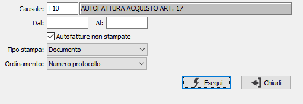

Stampa autofatture art. 17
Il programma effettua la stampa delle autofatture art. 17 dai movimenti contabili.

CAUSALE: codice della causale contabile relativa alla registrazione delle fatture art. 17. Sul campo è attivo lo zoom F9.
DA DATA: indicare l’eventuale data da cui si desidera iniziare la stampa. Confermando a vuoto, l’analisi inizia con il primo movimento valido.
A DATA: indicare l’eventuale data con cui si desidera terminare la stampa. Confermando a vuoto, l’analisi termina con l’ultimo movimento valido.
AUTOFATTURE NON STAMPATE: apporre la spunta se si desiderano stampare solo le fatture non ancora stampate, lasciare vuota la casella se si desidera stampare tutte le fatture presenti.
TIPO STAMPA: consente di scegliere se stampare i singoli documenti oppure un report in formato elenco che riporta analiticamente le fatture.
ORDINAMENTO: definisce il criterio di ordinamento dei documenti in stampa: per numero di protocollo, per data documento, per ragione sociale del fornitore, per codice del fornitore.